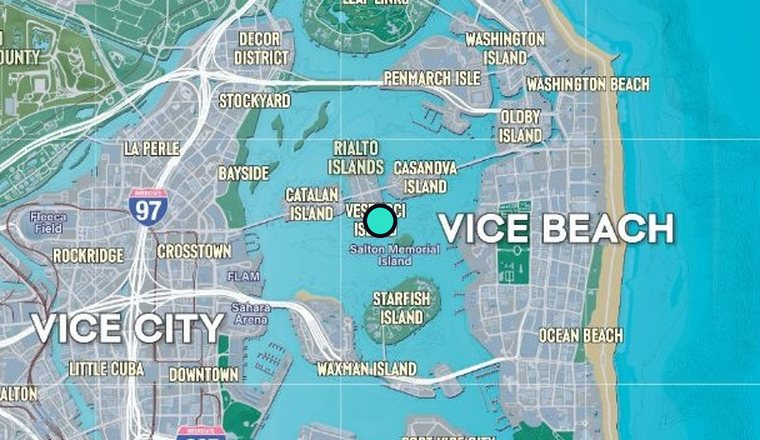

O carro do Brian em Velozes e Furiosos
Médio · ⏱ 15 minEstimativa pra quem já está perto do local
Uma réplica do Mitsubishi Eclipse verde de 1995 do Brian O'Conner (Paul Walker), do primeiro Velozes e Furiosos, fica escondida numa garagem. Dá pra roubar logo no começo do jogo.
Onde fica

📷 Ainda sem print deste easter egg. Tem um? Manda pra gente e leva o crédito.
📍 Garagem de uma mansão em Vespucci Island (Rialto Islands, Vice City)
Como encontrar
- Vá até a mansão em Vespucci Island, nas Rialto Islands (Vice City).
- Abra a porta de enrolar da garagem, não a porta lateral: assim o alarme não dispara.
- Se o alarme tocar, desligue no painel da parede pra polícia não aparecer.
- Saia dirigindo o Eclipse. Pra ficar com ele de vez, é preciso liberar o Pay 'n' Spray no Capítulo 2. Antes disso, deixe o carro estacionado no esconderijo.
Passo a passo em vídeo
Vídeo no YouTube · assistir no YouTube. Os créditos são do canal que publicou.
Fontes e créditos
Adicionado em 25/11/2026.